Special Article
Special Article
Jaffna Monitor hellojaffnamonitor@gmail.com 62 “What are we when stripped away from our cultural roots?… that is the question?” O ne of the eternal truths of all times is that the tendency for change is built into all dimensions of the universe we live in. The Hindu saint Manikavasagar (khzpf;fthrfu;) in the 9th century encapsulated this eternal truth in his composition Sivapuranam (or (rptGuhzk;) as “khw;wkhk; itafj;jpd; ntt;NtNw te;jwpthk;” (let us recognise the manifestations of a changing universe). Similar sentiments were summarised in Sinhala Buddhist teaching as — fï wiaÓr f,dafla ;sfnk tlu bia;Sr foh wr wiaÒr ndjh mu‚˜ (the tendency for change is the only constant in this ever changing world). In this context, all dimensions of culture, including forms of music, have also undergone considerable changes over time. It continues to acquire new forms and these changes are largely dictated by the tastes and preferences of the listening public. BY: Mahesan Nirmalan MBBS, MD, FRCA, PhD, FFICM Manchester, United Kingdom Special Article Part-4 “Nathaswara Osaiyile” (ehj];tu XirapNy): An ancient art form that defines a people

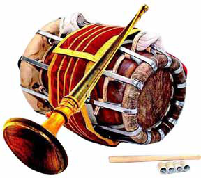
Jaffna Monitor hellojaffnamonitor@gmail.com 63 The nathaswaram and thavil music, as we have seen in parts 1, 2&3 of this series, was practiced by the nomadic musicians of the Deccan planes. It was introduced to South India by these moving tribes of people where it found widespread acceptance. In this context, the early music that was played using these instruments was no doubt in alignment with the folk music and dance traditions of these groups and was largely geared towards providing entertainment at social gatherings. However, as these groups found royal patronage - during the Chola and the subsequent Vijayanagara/Nayakkar periods (10th-18th centuries), and became accepted within the temple cultures of South India, the type of music and dance practiced by these groups also evolved and changed to suite the new settings. Pann Isai (gz; ,ir), Carnatic music, Hindustani music and Baratha Natyam (ghuj ehl;bak;) became the new genre of music that was acceptable to their new patrons and as a consequence the Devdhasi/Nattuvanar (Njtjhrp el;Ltdhu;) communities - that were subsequently rename as Isai Vellalar (,ir Ntshsu;), also adapted their practice to become the main proponents of these ‘new’ art forms. (T M Krinshna. A Southern Music). Despite the discriminations they faced within a highly caste-conscious South Indian and Sri Lankan societies, the nathaswaram/thavil vidwans, who were also members of the Devdhasi/Nattuvanar community, became some of the greatest musicians who were responsible for developing carnatic music to new heights. T N Rajaratnam (TNR) Pillai from Thiruvavaduthurai (jpUthtLJiw uh[uj;jpdk; gps;is) was one these legends whose musical genius was recognised all over India - so much so that he was invited by Prime Minister Jawaharlal Nehru to play a nathaswaram concert to mark the Indian independence. The name of TNR became synonymous with the classical raga ‘Thodi’ (Njhb uhfk;) and as a result he was Mr Panchapikesan Nagenthiran, the illustrious son of Vidwan Panchapikesan. His role is important in the musical history of the Tamil people in Sri Lanka as he has formed the link bridge between the pre-war vidwans from the 70s/80s and the new generation of artists, thus enabling the continuation of the musical traditions.
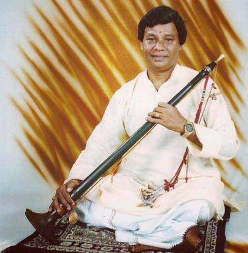
Jaffna Monitor hellojaffnamonitor@gmail.com 64 commonly (fondly) referred to as ‘Thodi Rajaratnam Pillai’. Many of the frontline vidwans of this period in South India and in Sri Lanka, played carnatic music exclusively and whenever they ventured into lighter forms of music towards the end of a concert, they would play one or two compositions of ‘light music’ by the Tamil poet Subramaniya Barathyar or melodies drawn from the Tamil cinema. Even when they did so, the selection of compositions they played were based on classic carnatic (or Hindustani) ragas. The importance of cultural revival cannot be over stated in the rebuilding of the Sri Lankan Tamil community at the end of the prolonged civil war that lasted almost 3 decades. A generation of nathaswaram and thavil vidwans have played a monumental role towards this end in maintaining these musical traditions through this prolonged period that was marred by war, conflict with significant economic hardships to all professional musicians. Their dedication to this cause needs to be recognised by the entire community. Four of the more popular Vidwans need a special mention in this context as they have formed the link bridge between the elders in their community from the 70s/80s (the pre- war period) and the current generation of young post-war artists. P Nagenthiran from Chavakacheri, is the son of the very renowned Nathaswaram Vidwan Mr Panchapikesan (see Part 1, Jaffna Monitor 15th December 2024; P: 38-53), migrated to Canada during the troubled times and has continued to serve the Tamil community in Canada and many other European countries. Despite being domicile in Canada, he continued to travel to Sri Lanka very regularly where, along with other family members, he runs a training school aimed at nurturing budding new talents in the Thenmaratchi region.
Similarly, the role played by a contemporary artist Mr T Ketheeswaran from Alavetti in the continuation of the nathaswaram traditions before and after the war needs emphasis. In addition to being a very melodious nathaswaram player, who was the son of a popular Nathaswaram Vidwan Mr Ratnavel from Alavetti and a long term apprentice of Mr N K Pathmanathan, Ketheeswaran also painstakingly recorded the history of this art form in Sri Lanka. In the monograph he has published in 2025, in the presence of the Provincial Governor HE Mr N Vedanayagam, he outlines the important traditions that need to be observed in the practice of this art form and the role it has played in the wider cultural landscape of the Tamils in Sri Lanka. The book entitled “jkpou; nrt;tpay; ,irAk; ehfRu jtpy; epfo;j;JifAk;” (The Excellence of Tamil Music and the Practice of Nathaswaram Thavil music), is no doubt an essential read for all people with an interest in Tamil Music in Sri Lanka and is perhaps the first book dedicated to this art form to be published in the country. In recognition of his contributions he had been awarded the honorary titles of rq;fPj rhfuk; (The ocean of music) and ehj];tu fyhepjp (Doctorate in Nathaswaram) by various reputed leaned societies in the country. Along with his mentor Mr N K Pathmanathan, Mr Ketheeswaran performed at the 5th International Tamil Research Conference in 1981 and was decorated by the former Chief Minister Mr M G Ramachandran. He continues to travel all over the world performing at concerts that continue to delight the audiences and is also recognised as a literary giant within the Sri Lankan Tamil community.
These two musical geniuses have been supported by two eminent thavil vidwans who too came from very illustrious musical families in Sri Lanka. Mr T Udayashanker from Alavetti and the son of the all-time great thavil player Thakshinamurthy, and Mr S Suthaharan from Inuvil and the son of his illustrious father Mr Sinnarasa have withstood the pressures
Jaffna Monitor hellojaffnamonitor@gmail.com 65 of war and mass displacement of musicians and have been true servants of their places of birth. Their contributions are important in the continuation of the traditions of thavil, in its purest form, in Sri Lanka despite the interruptions caused by the long war. They have been the bridge between the generation of current thavil players and their illustrious forefathers in the pre-war period.
There is however significant changes in the horizon. Age old traditions and conventions are being broken in order to cater to the needs and demands of the listening public. For example, supporting musical instruments such as the violin, electric organ, electric guitars, thabla, mridangam, gatam etc. are being introduced into concerts where the Nathaswaram plays a lead role. Increasingly, film music dominates the performances, with proportionately less time being allocated to traditional compositions such as Mallary (ky;yhup), Kirthanas (fPu;j;jid), Alapanas (Myhgid) and Kalpana swarams (fy;gdh ];tuk;). Thavil artists seem to place greater emphasis on louder and (perhaps more ‘brash’) improvisations over the more traditional and gentler styles that characterised both Thakshinamurthy and Sinnarasa in the 70s/80s. The popular media in some instances seem to prefer ‘harsher’ expressions such as ‘mb’, ‘mdy; gwe;jJ’ or msntl;b mjpu;e;jJ (beating, sparks were visible during the playing or Alavetti vibrated) over more gentler expressions such as ‘thrpg;G’ (played) or ‘jOtp thrpj;jhu;’ (or caressed) when describing what a good thavil performance was/is. When questioned by the writer about these changing trends, both Mr Udaya Shanker (Son of Allavetti Thakshinamurthi) A: rq;fPj rhfuk;> ehj];tu fyhepjp Mr T Ketheeswaran from Alavetti. Asthana Vidwan at the famous Naguleswaram Temple at Keerimalai, and an apprentice of Mr N K Pathmanathan. B: The important academic contribution by Mr Ketheeswaran - jkpou; nrt;tpay; ,irAk; ehfRu jtpy; epfo;j;JifAk; (Solai Kuyil Avai Kaatru Publishers, Jaffna Sri Lanka 2025), is a landmark publication in the field.
A
B
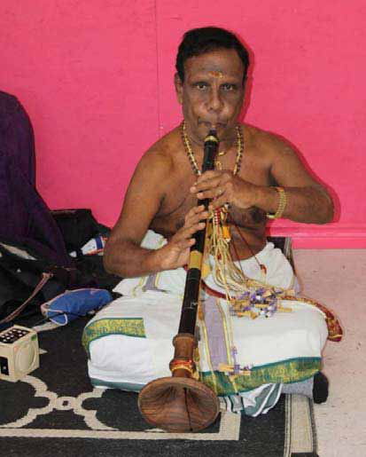
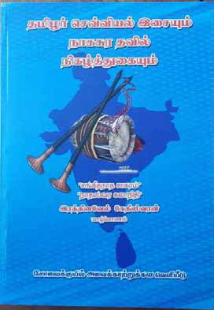
Jaffna Monitor hellojaffnamonitor@gmail.com 66 and Mr Suthaharan (son of Inuvil Sinnarasa) acknowledged that these changes in taste and emphasis are indeed happening – much to their dislike. One of them was open in his comment that “if we stick to older traditional styles we will not be invited again by the organisers”. There is no doubt that not all these changes are welcome additions to this ancient art form that has hitherto defined the very cultural identity of the Tamil community. Traditionalists such as Kambavarithi Jeyaraj (fk;gthupjp n[auh[; from Kamban Kalagam, Colombo) have openly expressed reservations of these changing trends and what impact it is likely to have on the unique identity the art form had maintained for centuries. Not all vidwans are however as pessimistic as some of the critiques. For example, Mr Panchamurthi – one of the few remaining elders within the community, told the writer that it is indeed possible to accommodate the wishes and requests of the listening public without completely deviating from the traditional foundations of the art form. He even stated that, cinema music does pose several novel challenges and some of its nuances are technically harder to replicate in the nathaswaram. The new generation of nathaswaram vidwans such as Mr Panchamurthy Kumaran and P S Balamurugan are however more optimistic. There is no doubt that the post-war revival of nathaswaram and thavil music in Sri Lanka has been spearheaded by two extremely popular artists – Mr Panchamurthy Kumaran and Mr P S Balamurugan. These two dashing young men, with their outstanding talents, professionalism and good looks continue to mesmerise ‘rasikas’ across the world. With a strong Tamil diaspora scattered all around the world and an economically thriving India these two artists have carried the nathaswaram music to all parts of the A: Mr T Udayashanker from Alavetti, son of Alavetti Thakshinamurthi and B: Mr S Suthaharan from Inuvil, son of Mr Sinnarasa. Mr Thakshinamurthy and Mr Sinnarasa were brothers and hence Udayashanker and Suthaharan are first cousins. Together, they have held on to the art of classical thavil playing and have been instrumental in passing their skills to the current generation of thavil artists.
A
B
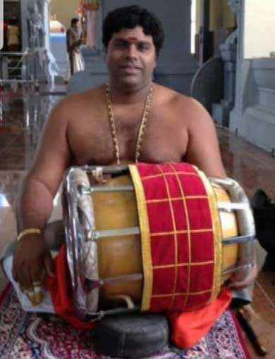
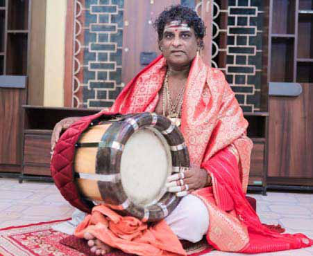
Jaffna Monitor hellojaffnamonitor@gmail.com 67 world. Unlike many of their- perhaps more orthodox, predecessors, these two maestros have been more proactive in accommodating the changes mentioned above and have been instrumental in incorporating new innovations - including the introductions of new musical instruments, such as the electric guitar, violin, electric organ etc. into their performances. With this transformation, the nathaswaram and thavil are gradually being incorporated into a ‘subservient’ orchestral format rather than always being a free flowing lead solo instrument. This ‘subservient’ role is something which was unthinkable in the past (and was almost considered a sacrilege) due to the belief that the nathaswaram being a ‘Raja Vadyam’ (uh[ thj;jpak; or a Royal Instrument) and its role was to lead and not follow a written script. Whilst including these instruments at concerts they play in more relaxed environments (such as weddings or cultural concerts), both Balamurugan and Kumaran have remained true to the history of their art forms at more formal settings such as the Temples. Kumaran told the writer that they still place a lot of emphasis on traditional compositions such as the ‘Mallari’ when they play at temple festivals even in Western A: Mr P S Balamurugan from Nallur and B: Mr P Kumaran from Kondavil. These two artists are currently the most popular Nathaswaram players in the world and are largely responsible for popularising this art form amongst the modern generation. Their adherence to traditional styles whilst accommodating the wishes of the new generation is most commendable. With invitations for performances coming from all over the world – including South India and the Deccans, where the intricacies of carnatic music is well understood, these two artists have clearly positioned Sri Lanka and the Sri Lankan Tamil culture as a force to be reckoned with in the world of classical music
A
B
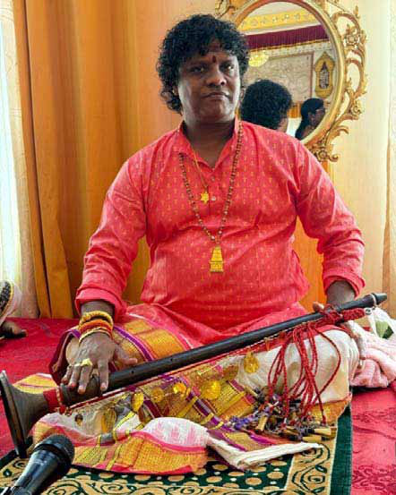
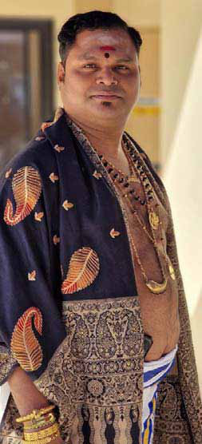
Jaffna Monitor hellojaffnamonitor@gmail.com 68 Mr P Kumaran (Right) with his father Mr K Panchamurthy from Kondavil. A: Inuvil P S Senthilnathan (PSS), B: Inuvil P Vipoornan and C: Badulla Udayashanker: The current generation of Thavil Vidwans at the heart of the revival project. PSS is responsible for training many young children through his academy and Udayashanker has opened the possibility of this art form being accessible to emerging artists from the central hills in the country.
A
B
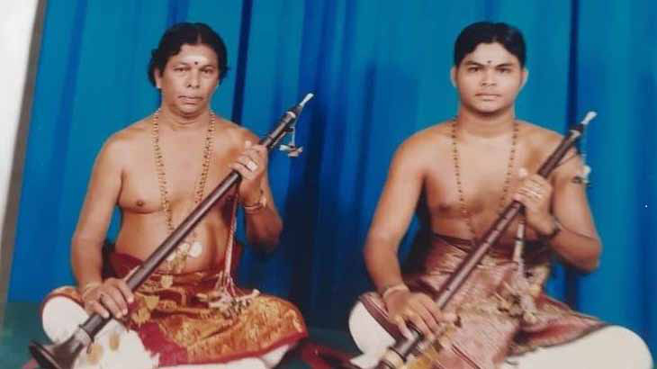
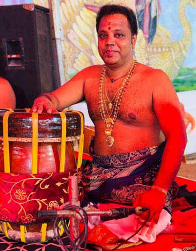
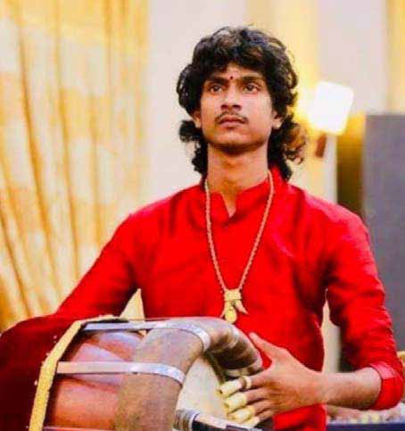
Jaffna Monitor
hellojaffnamonitor@gmail.com
69
countries. Balamurugan told the writer,
that “whilst accommodating the changing
wishes and tastes of the ‘rasikas’ is essential
for the survival of the art form, they – as the
flag bearers of this traditional art form, are
extremely conscious of the historic burden and
responsibilities they carry on their shoulders
in protecting the art form and its history”.
Kumaran agrees with this sentiment.
From a time period when the very survival
of this art form was in question (due to many
professional artists dying and/or migrating
to undertake unrelated jobs in western
capitals), the few remaining artists such as P
Kumarn, P S Balamurugan, T Udaya Shanker,
S Suthaharan and P S Senthilnathan have
not only revived this art form, but have in
many ways, taken it to new heights and true
global recognition. Temples in many Indian
states beyond Tamil Nadu – such as Kerala,
Andra, Karnataka and Maharashtra, where the
nuances of carnatic music is well understood,
now regularly invite Sri Lankan nathaswaram
and thavil vidwans to perform regularly at
their annual temple functions. P Kumaran,
recently performed as a back-up artist for
a famous south Indian movie – Annaatte
(mz;zhj;j) . These are true testaments to
the achievements and commitment of this
new generation of artists we should all be
proud of and cherish. Their services should
be marked and every one of them should be
respected, cherished and protected by the
entire community. Aiding and abetting the
distortion of their traditional art form – by
over emphasising the role of the genre of
music promoted by South Indian cinema for
commercial purposes – would not serve the
interests of a community whose survival is
intimately linked to its age old musical and
cultural traditions.
The listening public no doubt has a huge
responsibility in protecting the art form.
Whilst there is no doubt that the current
generation of nathaswaram and thavil
Vidwans are as talented as and in many
instances technically more versatile than their
fore fathers, they are however compelled
to respond to the demands of the listening
public. It will be a tragedy of monumental
proportions, if this traditional art form that
has defined the very cultural identity of the
Tamil people should over time evolve (or
transform) into a form of music that has lost
its carnatic/hindustani musical roots and
its commitment to devotion (or Bakthi –
gf;jp). Whilst we have to accept that every
community and every generation has an
inalienable right to define their own musical
tastes and preferences, it has to be tempered
with a sense of responsibility that takes into
account the long term needs of a community
– including its unique cultural position. The
current generation of Tamils – all over the
world, are heavily influenced by South Indian
cinema and as a result the musical preferences
are also reflected by the genre of popular
music promoted within South Indian cinema.
Whilst many compositions popularised
C
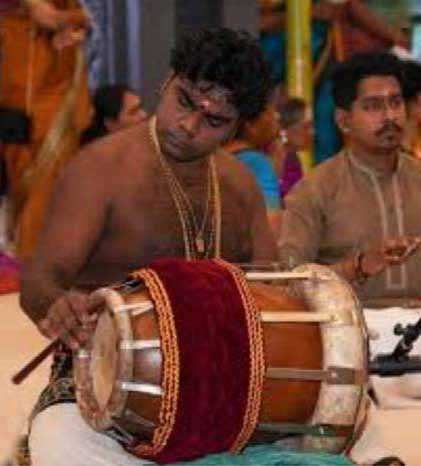
Jaffna Monitor
hellojaffnamonitor@gmail.com
70
within Tamil cinema are based on powerful
and emotive lyrics and are based on classical
Carnatic and Hindustani ragas that are highly
suited to be performed at any Nathaswaram
concert, an equal number of compositions
are better suited for more informal settings
and casual parties. Whilst not wishing to
curtail the freedom of the artists in any shape
or form, it must be emphasised that what
is at stake is the very cultural identity of a
community, that is still recovering from the
effects of a prolonged war that took the entire
community to the very brink of destruction.
In this context, the nathaswaram/thavil music
must retain its position as an elite art form –
rooted in centuries of classical and devotional
traditions, and not transform itself into an
entirely popular form of entertainment based
on simple and repetitive rhythmic/lyrical
styles.
In concluding this 4 part series of articles on
the history of nathaswaram in Sri Lanka – with
a particular focus on a selection of the leading
proponents, the author is acutely aware that
this is merely a snap shot of what is essentially
a complex jig saw. There are bound to be
omissions of extremely versatile artists who
have not been as visible as others in the public
space. This by no means undervalues their
contributions or the quality and wisdom they
have contributed to the wider society through
their music. Every one of them had been
unique and the wider community owes them
a deep sense of gratitude. I hope this series of
articles – in English and first of its kind in Sri
Lanka will open the interests of a wider cross
section of society, to this ancient art form that
is deeply rooted in tradition and in many ways
epitomises the cultural identity of the Tamil
people, wherever they may live.
The End
Jaffna-Trichy...
Tamil Nadu and Sri Lanka before civil conflict
disrupted air travel between the two regions.
The launch of this route is expected to
significantly boost tourism and trade. Trichy,
known for its ancient temples and historical
landmarks, has long served as a gateway
to Tamil Nadu’s rich cultural heritage.
Additionally, with a large number of Sri
Lankan refugees settled in Trichy, the new air
route is expected to further strengthen familial
connections between the two regions.
However, whether this route will truly benefit
businesses remains uncertain, as Jaffna’s
business community has long raised concerns
about the treatment of Sri Lankan travelers at
Tamil Nadu airports—particularly in Chennai
and Trichy. Many complain that Indian
immigration officers treat most Sri Lankans,
particularly those from the North and East,
with suspicion, often subjecting them to
unnecessary scrutiny and discrimination.
A prominent businessman from Jaffna told
Jaffna Monitor that he and his associates have
stopped using Chennai and Trichy airports
altogether due to repeated mistreatment by
immigration officers. Instead, they now prefer
traveling via Bengaluru or Hyderabad airports,
where they experience less hassle and more
professional treatment.
A well-wisher of India in Jaffna told Jaffna
Monitor that the Indian government must
urgently address this issue, as such treatment
could discourage trade and travel, ultimately
hindering the full potential of the new Trichy-
Jaffna route.